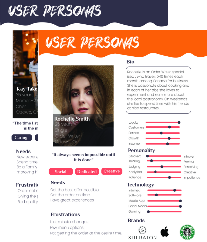

Sushi 168
#UX/UI #Responsive #Website
The objective of this project was to redesign the website of a restaurant. The restaurant that was chosen was Sushi 168, located in the city of Ottawa, Ontario. Upon viewing the original design, several design and functionality problems were found. The user experience was not natural, the graphic elements had no hierarchy and the function was very confusing for the user.
MoodBoard

The users who identified themselves were young people between 18-45 years old. They seek to be able to enjoy a wide variety of food, either ordering it from home, picking it up or on the spot. In addition, they seek to have a satisfactory experience when going to the restaurant